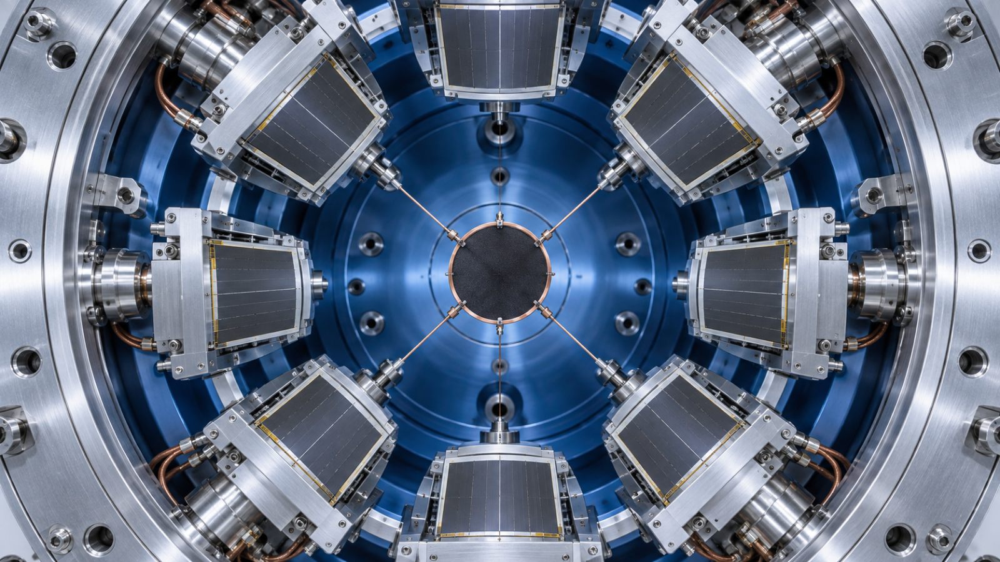
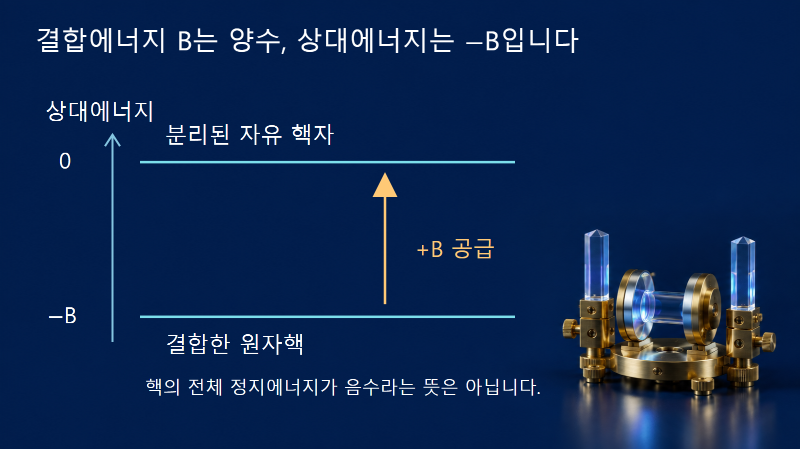
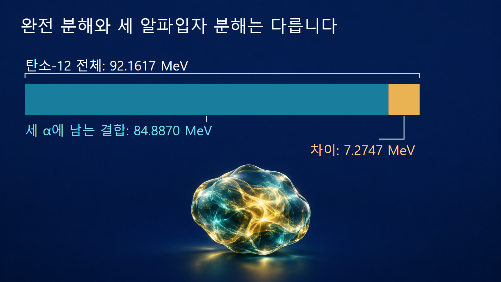

질량·에너지와 핵반응 · 023
결합에너지
원자핵을 자유 핵자로 완전히 분해하는 데 필요한 에너지

결합에너지 B는 한 원자핵을 양성자와 중성자 각각으로 완전히 분리하는 데 필요한 에너지입니다. 일부 핵자가 아직 서로 결합한 조각으로 나뉘는 과정과는 끝 상태가 다릅니다. 따라서 한 핵의 결합에너지를 알더라도, 모든 분해 반응에 그 에너지가 똑같이 필요하다고 말할 수는 없습니다.
‘결합되어 있다’는 말은 기준보다 에너지가 낮다는 뜻입니다
같은 Z개의 양성자와 N개의 중성자가 서로 멀리 떨어져 정지한 상태를 상대에너지 0으로 정합니다. 결합한 핵의 에너지는 그보다 낮으므로 −B로 표시할 수 있습니다. B 자체는 분리에 필요한 양의 에너지입니다. 핵의 에너지가 음수라는 표현은 기준에서 뺀 상대값이며, 핵의 정지에너지 mc2가 음수라는 뜻이 아닙니다.
자유 핵자 상태에서 결합된 상태로 내려오면 에너지 B를 외부로 내보내야 하고, 반대로 올라가려면 최소한 B를 넣어야 합니다. 이 상태 차이는 질량 차이와 연결되어 B=[Zmp+Nmn−m핵]c2를 만족합니다. 그림의 높이는 에너지 차이를 뜻하며 핵자의 실제 높이나 이동 경로를 뜻하지 않습니다.

핵력의 위치에너지 하나만 읽는 값은 아닙니다
핵 속 핵자들은 양자상태에 있고 운동에너지도 가집니다. 강한 상호작용의 인력, 양성자 사이의 전기적 반발과 핵자 운동 등이 합쳐진 전체 에너지가 자유 핵자 기준보다 낮아질 때 결합상태가 됩니다. 따라서 결합에너지를 핵력의 위치에너지 깊이와 그대로 같다고 놓으면 운동에너지 등의 기여를 빠뜨리게 됩니다.
특히 ‘강한 힘이 작용한다’는 설명만으로 어떤 Z와 N의 조합이 안정하게 존재하는지 정할 수 없습니다. 양자상태의 점유, 핵자 사이 상관관계와 가능한 붕괴 경로가 모두 관련됩니다. B가 양수라는 사실은 자유 핵자 전체로 분해하는 데 에너지가 든다는 뜻이며, 다른 핵으로의 모든 붕괴가 금지된다는 뜻은 아닙니다.
탄소-12를 끝까지 분해하는 예시
첫 번째 예시로 탄소-12를 양성자 6개와 중성자 6개로 완전히 분리합니다. AME2020 표의 핵자당 결합에너지 7680.1446 keV에 A=12를 곱하면 전체 결합에너지는 약 92.1617 MeV입니다. 이 글에서는 전자 결합에너지의 작은 차이를 무시하는 MeV 규모의 비교로, 약 92.16 MeV라고 사용합니다. AME2020의 값은 원자질량을 이용한 평가값이므로, 전편의 전자 없는 핵질량 계산과 마지막 소수자리까지 같은 정의라고 보지 않습니다.
같은 탄소-12를 헬륨-4 핵 3개로 나누면 이야기가 달라집니다. 헬륨-4 핵 안에는 핵자들의 결합이 남아 있습니다. 같은 표에서 헬륨-4의 전체 결합에너지는 약 28.2957 MeV이므로 세 조각에 남는 합은 약 84.8870 MeV입니다. 필요한 상태 차이는 92.1617−84.8870≈7.2747 MeV입니다. 완전 분해의 92.16 MeV와 세 알파입자 상태까지의 약 7.27 MeV를 바꿔 쓰지 않습니다.
이 계산은 초기·최종 상태 사이의 에너지 차이이며, 실제 탄소 광분해 실험의 감마선 문턱을 모든 자릿수까지 계산한 값은 아닙니다. 실험실계에서는 운동량 보존에 따른 반동과 최종상태 조건을 적용해야 합니다. 또한 탄소핵 내부가 항상 세 개의 고전적인 구슬 묶음으로 고정되어 있다는 구조 그림으로 해석하지 않습니다.

리튬-6도 조각에 결합에너지가 남습니다
두 번째 예시는 리튬-6을 헬륨-4 핵과 중수소핵으로 나누는 비교입니다. AME2020 표의 B/A에 각 핵의 A를 곱하면 B(6Li)≈31.9940 MeV, B(4He)≈28.2957 MeV, B(d)≈2.2246 MeV입니다. 조각들이 보유한 결합에너지의 합은 약 30.5202 MeV이고, 원래 핵과의 차이는 약 1.4738 MeV입니다.
리튬-6의 전체 결합에너지가 약 31.99 MeV라고 해서 알파입자와 중수소핵으로 나누는 데 그 전부가 필요하지는 않습니다. 반대로 그 조각들을 모두 자유 핵자로 더 분해하려면 남아 있는 약 30.52 MeV를 추가로 공급해야 합니다. 두 단계를 합치면 처음 핵을 완전히 분해하는 값으로 돌아옵니다. 반올림한 표시값끼리 계산하면 마지막 자리에 차이가 생길 수 있으므로 아래 비교는 같은 평가표의 원래 자릿수에서 계산했습니다.
| 초기 핵 → 최종 상태 | 최종 조각에 남는 결합에너지 | 공급할 상태 차이 |
|---|---|---|
| 탄소-12 → 6p + 6n | 0 MeV | 약 92.16 MeV |
| 탄소-12 → 3α | 약 84.887 MeV | 약 7.275 MeV |
| 리튬-6 → 3p + 3n | 0 MeV | 약 31.994 MeV |
| 리튬-6 → α + d | 약 30.520 MeV | 약 1.474 MeV |
방출에너지의 부호를 결합에너지로 검산합니다
양성자 수와 중성자 수가 각각 보존되는 반응에서는 자유 핵자의 질량 항이 양쪽에서 상쇄됩니다. 그 결과 반응 Q값은 생성물 결합에너지 합에서 반응물 결합에너지 합을 뺀 값입니다. 생성물 쪽의 결합이 더 강하면 정지에너지는 더 낮아지므로 Q가 양수이고, 그 차이가 운동에너지나 방사선으로 나올 수 있습니다. 베타붕괴처럼 양성자·중성자 수가 서로 바뀌는 과정에는 이 단순한 상쇄를 그대로 적용하지 않습니다.
탄소-12에서 세 알파입자로 가는 방향은 Q≈−7.27 MeV이고, 역방향의 상태 차이는 Q≈+7.27 MeV입니다. 역방향 Q가 양수여도 세 입자가 한꺼번에 손쉽게 붙는다는 뜻은 아닙니다. 반응의 실제 경로와 중간상태, 장벽 및 발생률은 에너지 수지와 별도의 문제입니다.
숫자 하나에 서로 다른 질문을 담지 않습니다
전체 결합에너지 B는 핵 전체의 완전 분해를 묻습니다. B/A는 핵자수로 나눈 평균으로 서로 다른 크기의 핵을 비교하는 데 사용합니다. 특정 입자 분리에너지는 그 입자를 떼어 낸 뒤 남는 핵까지 지정해야 구할 수 있습니다. 실제 반응의 Q값은 참여하는 모든 반응물과 생성물을 명시해야 합니다. 이 네 양은 서로 연결되어 있지만 어느 하나가 나머지를 대신하지는 않습니다.
계산표를 읽을 때는 열 제목이 B인지 B/A인지 확인하고, keV를 MeV로 바꾸려면 1000으로 나눕니다. 이 글의 AME2020 예시는 핵자당 값을 전체 값으로 바꾼 다음 최종 조각의 합을 뺐습니다. ‘결합에너지가 크다’는 문장을 만났을 때 어느 핵의 전체값인지, 평균값인지, 어떤 최종 상태와 비교한 값인지를 묻는 것이 오해를 줄입니다.